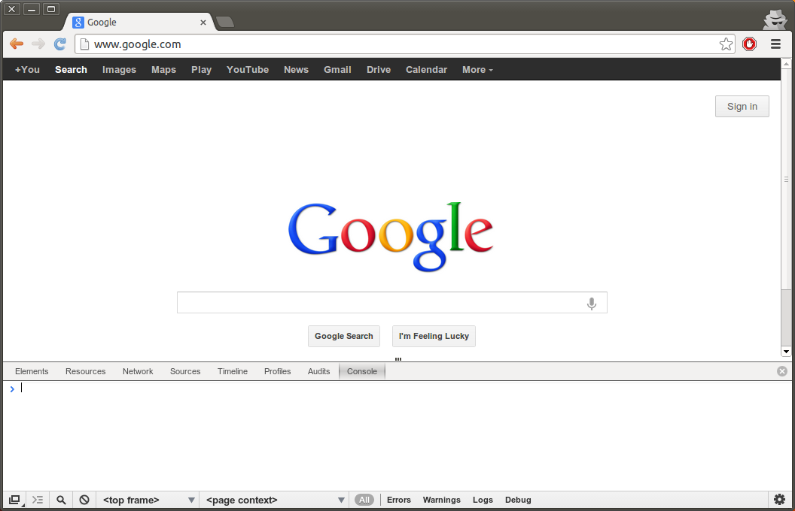

JavaScript Basics¶
Preamble¶
A Note about JavaScript¶
JavaScript is the language understood by web browsers, and thus a de-facto language for web applications.
Objectively, JavaScript is a programming language with multiple flaws. It was designed by Netscape in 1995 for commercial purpose by a small team with a short development time. It was not meant to be the most universal programming language ever. It has a lot a initial design problems and, due to backward-compatibility necessity, it was not really improved since its creation.
Still, despite its problems, the core of the language contains good ideas allowing a lot of creativity for programmers. (like prototype-based programming and functional programming.) Most of JavaScript’s shortcomings can be negated by using correct patterns and proper tools. It also has strong advantages on its own. First of all, JavaScript is very fast. Fast to start, fast to run and fast to deploy. The ability to use HTML and the multimedia API of the browser also allows to create very nice looking applications and good productivity compared to desktop application programming. The decisive point is probably the fact that JavaScript virtual machines are available on 99.99% of the desktop computers on the planet.
In the end, if you’re a good programmer with good libraries, the advantages far outweigh the inconveniences and make JavaScript and the browser one of the best environments to develop applications for the general public.
Command Line Interpreter¶
To test the basic features of the language, we recommend you begin by using a command line interpreter. Most modern web browsers will provide a console to use JavaScript, but it is recommended to use Google Chrome for OpenERP’s web module development. This guide will assume you use this particular browser.
Once Chrome is installed, open any web page then go in the configuration menu of Chrome and select Tools > Developer Tools or use Ctrl + Shift + I. This should reveal a new section at the bottom of the window. Now select the Console panel. You should have a screen looking like this:
{kind=link}
You will now be able to test the code snippets given in the next part.
Basic Data Types¶
Numbers¶
> ((3 + 3) / 1.5) * 2;
8
Please note JavaScript do not have integers. All numbers are floats. This is a major difference with most other programming languages. This has impacts on some mathematical operations. Example:
> 3 / 2;
1.5
In C, Java or Python the result would be 1, except if one of the members was casted to float or explicitly declared as
float using a different notation (2.0 or 2.).
Strings¶
> "Hello World";
"Hello World"
> 'Hello World';
"Hello World"
Strings can be declared using single quotes or double quotes. Like most high level programming languages, strings have methods for many operations. For more information on JavaScript Strings, see the Strings API (MDN).
> "Hello World".charAt(3);
"l"
> "Hello World".slice(6, 9);
"Wor"
> "Hello World".length;
11
Strings also use the + operator for concatenation:
> "Hello " + "World";
"Hello World"
Undefined¶
If you declare a variable but do not assign it, it will have a special value. This value is not the same as null.
> var x;
> x;
undefined
Implicit Type Conversions¶
JavaScript provides automatic type conversion for most operators.
> "Test" + 5;
"Test5"
Practically, this behavior can be useful in some cases, like implicit conversion to strings. But it can also lead to strange behavior, particularly with comparisons. Here are some examples:
> "5" == 5;
true
> "" == 0;
true
> "0" == false;
true
Like in C, numbers are considered as false if they are 0 and true otherwise. Strings are considered as
true except if they are empty.
During any operations involving different types, multiple castings can occur which are quite complicated to predict for
the programmer. That’s why it is considered safer to always use the === and !== operators.
> "5" === 5;
false
> "" === 0;
false
> "0" === false;
false
These operators are more strict than the simple comparison operators above: they don’t just compare the value, but also the type of the variables.
Control Structures¶
JavaScript provides the same control structures than C. (To test with Chrome’s console, you can use Shift + Enter to enter multiple lines of code.) More info on JavaScript control structures and statements can be found on Statements (MDN)
> if (true == true) {
console.log("true is true");
}
true is true
> var x = 0;
> while (x < 3) {
console.log(x);
x++;
}
1
2
3
> for (var i = 5; i < 8; i++) {
console.log(i);
}
5
6
7
JavaScript also provides a specialized for structure to loop on objects. (for (... in ...).) It should be noted
that, due to bad conception of the language involving variable scopes, functional programming, performance issues and
bad behavior with arrays, almost all experienced programmers will avoid the usage of that structure and rather use
functional programming functions provided by JavaScript or external libraries.
Functions¶
Functions can be declared like this:
> function talk() {
console.log("Hello World");
}
> talk();
Hello World
In JavaScript functions are also complete types. They can be declared as expressions and stored in variables.
> var talk = function() {
console.log("Hello World");
}
> talk();
Hello World
> var talkAgain = talk;
> talkAgain();
Hello World
> function executeFunc(func) {
func();
}
> executeFunc(talk);
Hello World
Function arguments are declared like in most dynamically typed languages: without types. Please note that the JavaScript
virtual machine never checks the number of arguments when a function is called. If there are more arguments the function
will be called anyway. If there are fewer arguments the remaining ones will be undefined.
> var print = function(a, b) {
console.log(a);
console.log(b);
}
> print("hello");
hello
undefined
> print("nice", "to", "meet", "you");
nice
to
Variables and Scopes¶
A variable is declared by preceding its name by var. Unlike C++ and Java, a scope is not defined by the existence of
braces. A scope is defined by a function.
> function func1() {
var x; // x is inside the scope of func1
function func2() { // func2 is inside the scope of func1
var y; // y is in the scope of func2
}
while (true) {
var z; // z is not in a new scope, it is the same scope than x
}
}
In this example, the variable z will not be re-created at each iteration of the while loop. It is always the
same variable for each iteration because the variable is defined in the scope of func1.
Functions can also access all previously declared variables. We call them closures when they do so.
> function func1() {
var x = "hello";
function func2() {
console.log(x);
}
func2();
x = "world";
func2();
}
> func1();
hello
world
When a variable is declared directly at the root of a source file, not inside any function, it exists in the global scope. The global scope is not a scope specific to each source file. The global scope is shared amongst all pieces of JavaScript code that are executed by an instance of the virtual machine, which means on the same web page.
// file source1.js
var x = "value1";
// file source2.js
var x = "value2";
If those two files are loaded by the same web page the variable x can only have one value, "value1" or
"value2", depending on which file was loaded last. This is obviously a problem and it can be solved using the Module
Pattern (see later).
Arrays¶
The syntax for arrays is quite similar to other dynamic languages:
> var array = ["hello", "world"];
> for (var i = 0; i < array.length; i++) {
console.log(array[i]);
}
hello world
Please note the above syntax to iterate on arrays works but is prone to programming errors due to problems with scopes
in JavaScript, for real use-cases you should use Array.forEach() or a similar function provided by a third-party
library.
> var array = ["hello", "world"];
> array.forEach(function(elem) {
console.log(elem);
});
hello world
Like strings, arrays have methods for various operations:
> var array = [];
> array.push("banana"); // adds an element at the end
> array.push("tomato");
> array;
["banana", "tomato"]
> array.pop(); // removes the last element and returns it
"tomato"
> array;
["banana"]
For more information on JavaScript arrays, see Arrays (MDN)
Objects¶
Object-oriented programming is possible in JavaScript, but it is very different compared to most other programming languages (except if you’re familiar with Lua).
First of all, objects are dictionaries and dictionaries are objects. Javascript makes no distinction between the two. The syntax is similar to Python’s dictionaries, but has alternative syntactic sugar depending if you prefer to use a dictionary-like or an object-like syntax. Demonstration:
> var obj = {
"key1": "hello", // dictionary-like declaration
key2: "world", // object-like declaration
};
> console.log(obj["key1"]); // dictionary-like lookup
hello
> console.log(obj.key2); // object-like lookup
world
obj["key"] and obj.key have the exact same meaning. The first one will, by convention, be mostly used if you
want to make a lookup in a dictionary. The second one will be mostly used to access an object’s attribute.
Methods can simply be defined by putting a function inside an object:
> var person = {
name: "John Smith",
presentYourself: function() {
return "Hello, my name is " + this.name;
},
};
> person.presentYourself();
"Hello, my name is John Smith"
> person.name = "John Doe";
> person.presentYourself();
"Hello, my name is John Doe"
In JavaScript, each function has an additional, implicitly declared variable called this. When
a method is called on an object (using the usual object.method(arguments...) syntax), the this variable will
be a reference to the current object.
In the above example, we define a unique object containing all the attributes and methods necessary to make it work. But that’s not how most programming languages will handle object-oriented programming. They have a concept of class. A class will contain the properties common to all its instances. There are no classes in JavaScript but it is possible to reproduce that concept using prototypes.
> var Person = function() { // this function will represent a class "Person" and server as a constructor
this.name = "JohnSmith";
};
> Person.prototype.presentYourself: function() { // we add a method to the prototype of our class
return "Hello, my name is " + this.name;
};
> var person = new Person();
> person.presentYourself();
"Hello, my name is John Smith"
Since prototype-based oriented object programming is a vast subject we will not expand upon it in this guide, though you can easily find some information about it on Internet. There also exists multiple JavaScript libraries to ease the creation of classes.s